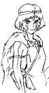

制作日誌 1995年６月
95.6.01（木）
ＣＧ部開設。日本テレビ編成局美術開発部の菅野嘉則氏が2年間の予定でジブリに出向。また、アニメーターの百瀬義行氏がデザイナーとして参加。
95.6.07（水）
「耳をすませば」｢On Your Mark｣ 初号。イマジカ試写室でスタッフ全員が見る。その後場所を吉祥寺のホテルへ移して打ち上げ。
95.6.09（金）
宮崎監督、鈴木プロデューサーと共に「耳をすませば」の宣伝キャンペーンに出発。約3週間をかけて全国を巡る。
95.6.10（土）
冒頭部分、主人公アシタカの住む隠れ里、今でいう東北地方の美術を男鹿和雄氏が担当することになる。
95.6.15 (木)
冒頭に登場するもののけ、タタリ神を全てＣＧにする為の打合せ。直ぐにテスト開始。
95.6.19 (月)
有楽町マリオン、日本劇場にて「耳をすませば」完成披露試写会。
95.6.22 (木)
タタリ神の処理をＣＧと手描きの2種類のテストを平行して行うことになる。
95.6.24 (土)
伊藤裕之氏が演出助手として参加。
95.6.26 (月)
動画チェックは舘野仁美、中村勝利、斉藤昌哉の3氏でいくことに決定。
95.6.28 (水)
色指定の保田道世さんＩＮ。ジブリの絵の具が国内の絵の具会社、スタック、太陽の二社だけでは賄いきれなくなっている。「もののけ姫」用の絵の具の一部としてカナダのクロマカラー社製のものが使えるか、サンプルを発注。
| 次のページへ |
| 日誌索引へ戻る |
| 「もののけ姫」トップページへ戻る |